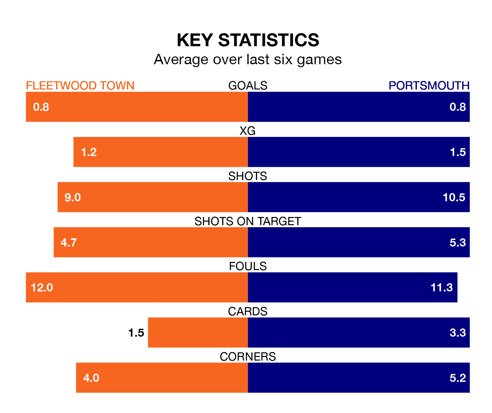

Portsmouth travel to the Highbury Stadium for Saturday's match against Fleetwood Town looking to bounce back from defeat last time out in EFL League One.
Pompey, who sit top of the league after 27 games, fell to a 3-0 home defeat to Leyton Orient on January 13.
They face a Fleetwood side who also lost their last match, a 2-1 defeat to Cambridge United, and who sit 24th in the table.
With Will Norris between the sticks, Portsmouth can rely on one of the league's safest pair of hands. He has kept 12 clean sheets in his 27 appearances this season, and no 'keeper has prevented the opposition scoring more often in EFL League One.
In Fleetwood's net, Jay Lynch has three clean sheets in 25 games. He has conceded a goal every 54 minutes, twice as often as the 106 minutes between goals for Norris.
Town are in terrible form in EFL League One, with no wins and two draws from their last six games.
With a win and two draws over that period, Pompey's form is better – they have taken five points from 18, compared to the Cod Army's two.
With 23 goals in 26 games so far this season, the hosts are scoring at below the league average rate with 0.9 goals per game. And they are conceding more than average, letting in 47 goals at a rate of 1.8 per game.
The away side, meanwhile, are above average scorers, with 1.6 goals per game, compared to a league average of 1.3. They have conceded 0.9 goals per game.
In the last 10 years, Fleetwood and Portsmouth have played each other on 14 occasions. Fleetwood won one of them, Portsmouth eight, and they drew five times.
On average, the Cod Army scored 0.9 goals and Pompey 1.8 in those matches.
Their last meeting was on December 23, when they played out a 1-1 draw.
Saturday's match will be refereed by Neil Hair, who has taken charge of eight EFL League One games so far this season, issuing two red cards and booking 35 players. He has awarded two penalties.
The last Fleetwood game Hair refereed was a 2-2 away draw with Barnsley on October 28. He is yet to oversee a match featuring Portsmouth this season.
Updated: 13:09 (UTC), 17/01/24